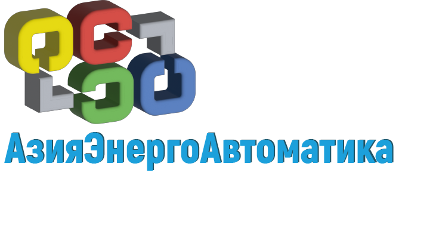
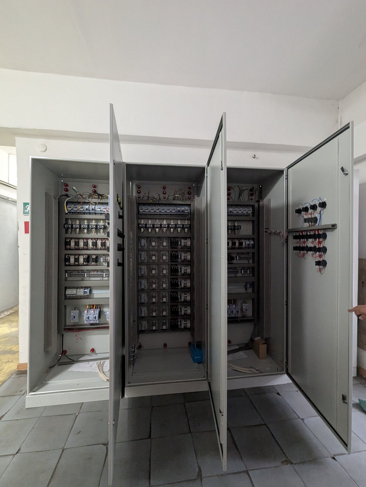
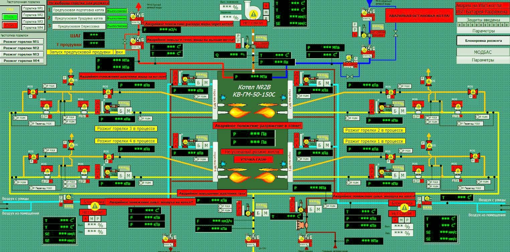
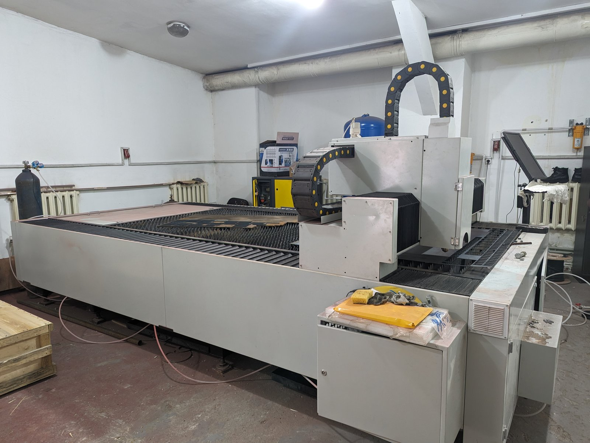
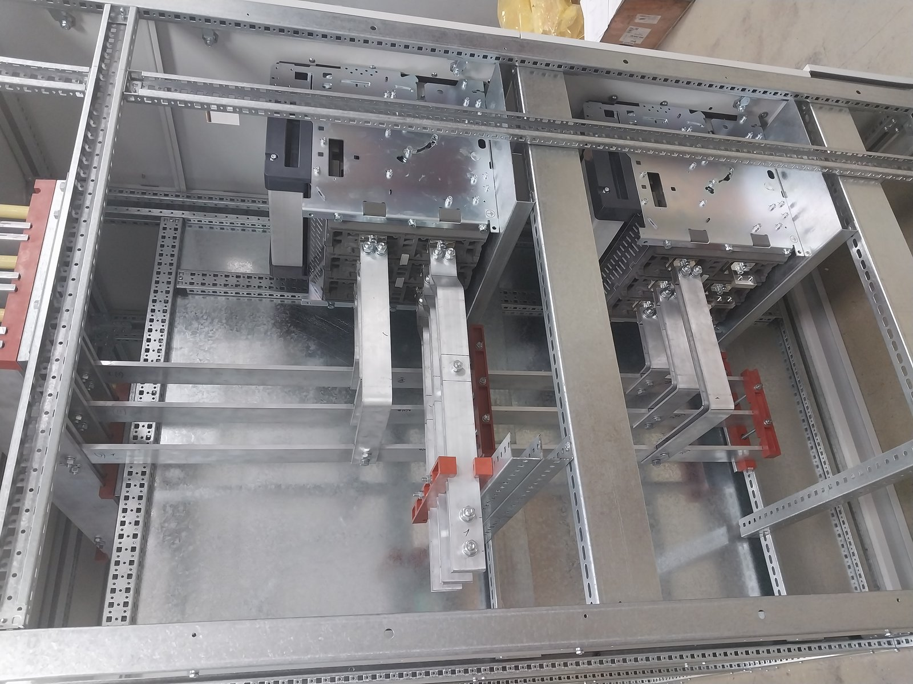
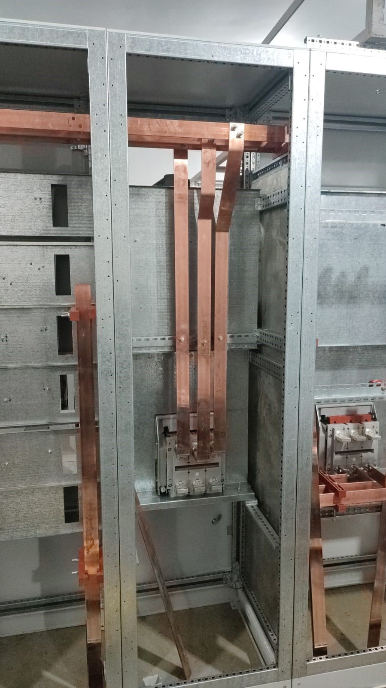
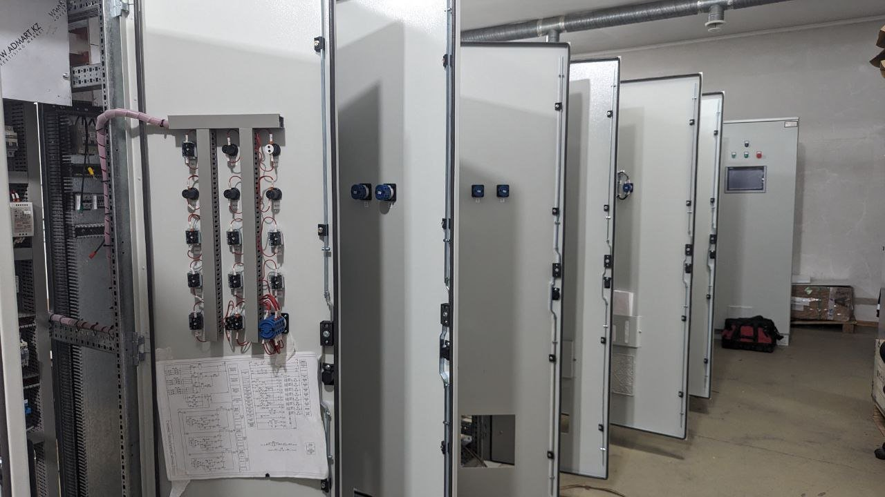
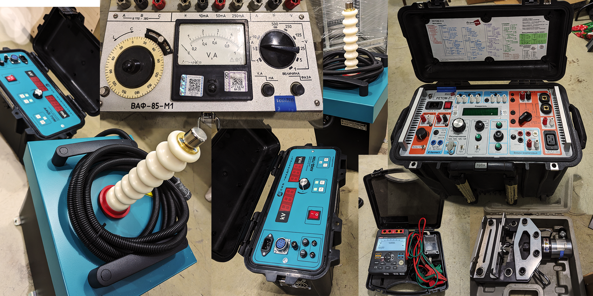
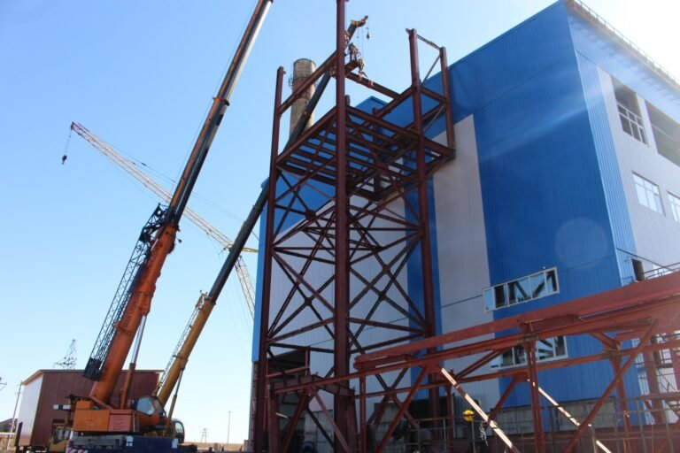

Поверхностные объекты горного производства производительностью 3.3 млн тонн руды в год. Комплексная система АСУТП обогатительного процесса, силовое электроснабжение и слаботочные сети объекта на базе компонентов Siemens и Schneider Electric.

Проектирование и ввод в эксплуатацию автоматизированных систем управления технологическими процессами любой сложности.

Собственный цех металлообработки и сборки в Алматы мощностью 100 единиц/год. Сертификаты ЕАЭС (до 2029 г.) и СТ-KZ (ДВЦ 52.79%).

Установка высокоточных датчиков, исполнительных механизмов и кабельных проводок в сложных промышленных условиях.

Силовое электроснабжение подстанций, котельных, горнодобывающих предприятий и заводов.

Комплексные пусконаладочные работы и сдача объекта надзорным органам и заказчику в промышленную эксплуатацию.

Собственная аккредитованная лаборатория для испытаний и диагностики электрооборудования до 10 кВ.

Комплексные решения телекоммуникаций, видеонаблюдения и контроля периметра удаленных объектов.
Низковольтные комплектные устройства до 1000 В: шкафы управления (программно-технический комплекс оборудования управления) тип «PREMIER».
Официальное свидетельство казахстанского происхождения товара и высокой доли внутристрановой ценности (ДВЦ).
| № | Год | Название проекта / Заказчик | Локация | Отрасль | Системы |
|---|